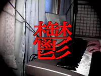

上の方ほど新しいです。

Intercityさんとコラボのオリジナル曲5曲入り。
特設サイトIntercityさんとコラボのオリジナル曲5曲入り。
LIVE*LITON 2014で演奏するEWIメタルのオリジナル曲をM3で先行リリース！
Intercityさんとコラボで作ったオリジナル曲5曲入り。
悪いな…このCD 3人用なんだ。電子音響音楽応用解析研究所はM3-2013秋で活動終了して、未来に帰ります。
実は電子音響音楽応用解析研究所は未来から来た同人音楽サークルだった！という設定が発覚（この時初めて考えた）。この作品を持って電子音響音楽応用解析研究所としての活動は終わり。
そして、次のM3からはNiusoundsとして参加することになるのでした…！
前作「タイプ：でんき・はがね」で発表したポケモン言えるかな？をライブバージョンに。さらにそこからスマブラのごとく各キャラのテーマがメタルアレンジ。
タイプ：でんき・はがね がタイトル。ポケモンネタのメタルアレンジ5曲入り。友達の提供楽曲もあり。
クレヨンしんちゃんのメロスピ。5曲入り。ちなみに「SM SHOW」というタイトルは「Symphonic Metal」の略という説とSEX MACHINEGUNSのライブビデオのタイトルをパクったという説があります。
けいおん！！をメタルにしたらじゅうおん！！（！が増えた）ということで。5曲入りのはずが20トラックくらいある謎のボーナス仕様。
アンパンマンのシンフォニックメタル。アニソンアレンジシリーズはここから始まった。5曲入り。
ただの参加者には興味ありません。この中でヘヴィメタル、特にシンフォニックメタル、メロディックスピードメタルにピンと来た方がいたら、あたしのところに来なさい。以上。
…というよくわからないサークル紹介文を書いた。初音ミク・巡音ルカを使ったオリジナル曲を3曲収録。
けいおん！をメタルにしたらじゅうおん！ということで、大学の友だちと一緒にけいおん！メタルアレンジを3曲収録
「EWIでメタルをやる」をコンセプトに、オリジナル曲4曲を収録。通常のCD-R版の他に要らなくなったら再利用できるCD-RW版を用意した。CD-R版の方が売れた。
ニコニコ動画でバズったラジオ体操短調版の他、悲しいアレンジ曲を5曲くらい弾いたはず（うろ覚え）。